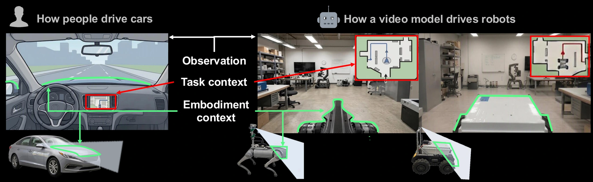

Intro
Just as people rely on visual context when driving, a video planner can benefit from task and embodiment context expressed through visual observations. We illustrate this with a bird’s-eye view map serving as global context for navigation, and a partial view of the robot body as embodiment context for precise, embodiment-aware control.

Overview
Given recent visual observations with embodiment or global visual context and a text prompt, the video planner predicts short-horizon future observations. The resulting flow fields from the predicted video are mapped to continuous robot actions by the IDM, followed by closed-loop replanning from new observations.
Acknowledgment
This work was supported by the Bavarian State Ministry of Science and the Arts (StMWK) through the MIT–TUM Collaboration (grant no. 151223031). Vincent Sitzmann and Sizhe Lester Li were supported by the National Science Foundation under Grant No. EEC 2330040 and the CAREER program under 2543631. The authors gratefully acknowledge funding and computational resources provided by AMD through the MIT AI hardware program and the AMD University Program’s AI & HPC Cluster.
BibTeX
@article{lee2026cuenav,
title = {Seeing What Matters: Visual Cue Guided Video Planning
for Generalizable Robot Navigation},
author = {Lee, Hojin and Li, Sizhe Lester and Hilger, Maximilian and
Lu, Susie and Lilienthal, Achim J. and Sitzmann, Vincent and
Duecker, Daniel A.},
journal = {arXiv preprint arXiv:XXXX.XXXXX},
year = {2026}
}